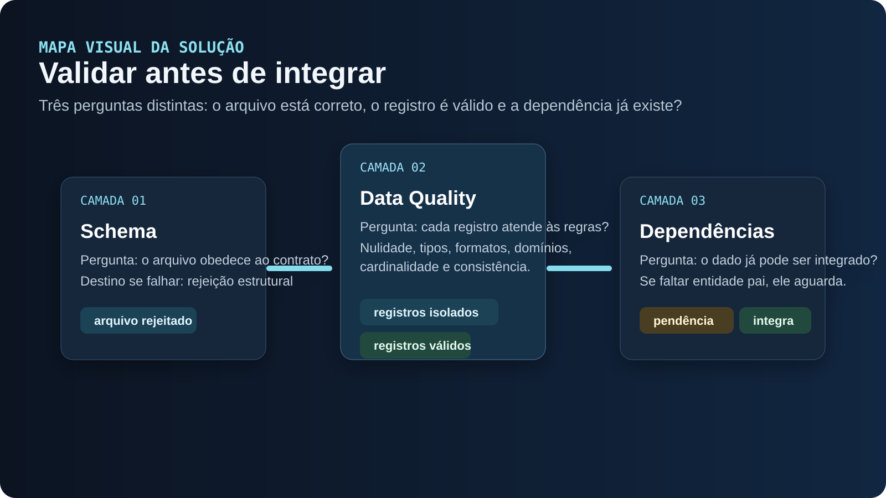
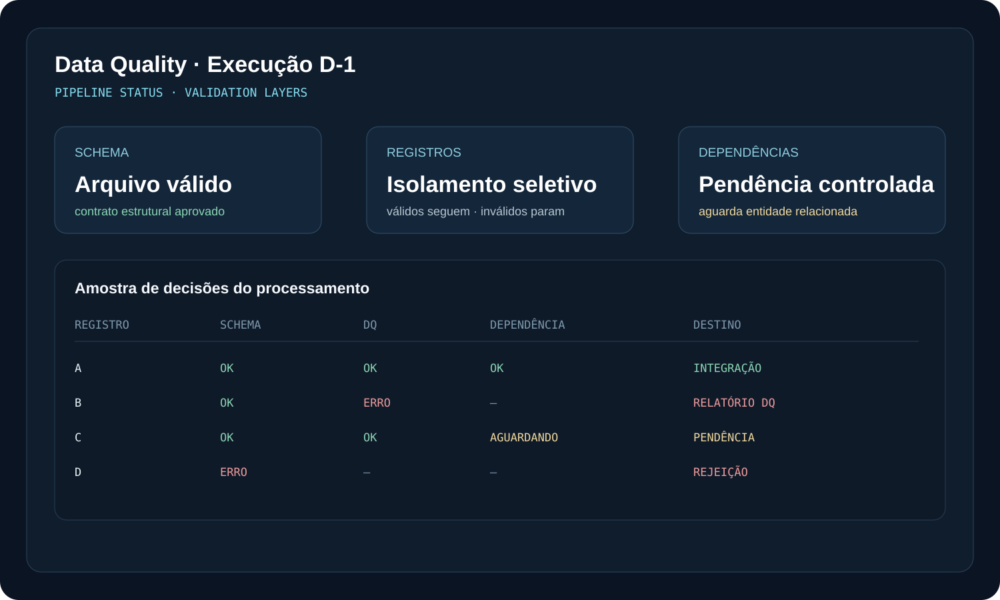

Quando o material original comprova uma implementação, eu descrevo como parte do caso. Quando discuto melhorias, alternativas ou mecanismos não documentados, marco explicitamente como análise técnica, trade-off ou evolução proposta.

- Deixar claro onde a decisão acontece
- Separar processamento, controle e publicação
- Tratar falhas sem confundir tipos de erro
- Facilitar operação, auditoria e evolução

Falhas estruturais, registros inválidos e dependências ausentes poderiam ser tratadas como se fossem o mesmo problema.
Schema, qualidade de registro e dependência passam a ser decisões separadas, preservando o que pode continuar e isolando apenas o que precisa de ação.
01 / ESCOPO DOCUMENTADO
Três tipos de falha, três tratamentos
O caso separa validação estrutural do arquivo, qualidade dos registros e dependências de negócio. Schema inválido rejeita o arquivo; registros inválidos são isolados enquanto os válidos podem seguir; registros corretos mas dependentes de uma entidade ainda ausente permanecem pendentes para nova avaliação.
Essa separação é o ponto central do desenho. Métricas de volume, tempo e taxa de rejeição não foram publicadas no material original.
02 / CONTRATO DE DADOS
Validar estrutura antes de aplicar regra de conteúdo
A primeira camada deve validar nomes de campos, tipos esperados, obrigatoriedade estrutural e compatibilidade do arquivo com o contrato. Em Spark/PySpark isso pode ser feito com schema explícito e validações adicionais. O objetivo é impedir que a etapa seguinte interprete colunas erradas ou dados incompatíveis.
Trade-off: inferir schema acelera exploração, mas é frágil em produção. Schema explícito aumenta controle e previsibilidade, ao custo de exigir governança de versões.
03 / REGRAS POR REGISTRO
Erro localizado não precisa bloquear tudo
Depois do schema, cada linha pode ser avaliada por nulidade, formato, domínio, cardinalidade e regras específicas. Eu separaria registros aprovados e rejeitados em datasets distintos, preservando motivo da rejeição, campo, valor e identificadores úteis para correção.
Trade-off: fail-fast simplifica a lógica, mas perde registros aproveitáveis. Quarentena por registro preserva throughput, porém exige reconciliação para garantir que aprovados + rejeitados representem corretamente a entrada.
04 / DEPENDÊNCIAS
Válido não significa pronto para integrar
Uma dependência ausente, como um registro filho cuja entidade pai ainda não chegou, não deveria ser classificada automaticamente como erro de qualidade. Eu modelaria um estado pendente com motivo e chave da dependência. Quando a condição for atendida, somente essa regra precisa ser reavaliada.
Trade-off: manter pendências evita reenvio desnecessário, mas cria estado persistente e risco de acúmulo. É preciso política de expiração, monitoramento e tratamento de pendências antigas.
05 / REPROCESSAMENTO
Voltar exatamente ao ponto necessário
A forma mais segura é guardar estado e motivo da retenção. Um erro de schema exige novo arquivo; um registro inválido pode exigir correção e reenvio; uma dependência ausente pode ser reavaliada sem repetir todo o caminho. Isso reduz processamento redundante e deixa o comportamento mais explicável.
Trade-off: granularidade maior de estados aumenta complexidade. Em fluxos simples, reprocessar tudo pode ser aceitável; em alto volume, costuma ser caro e lento.
06 / ESCALA COM SPARK
Distribuir processamento sem esconder regras
Spark/PySpark faz sentido quando o volume justifica processamento distribuído. Eu manteria regras determinísticas, evitando UDFs Python quando expressões nativas do Spark forem suficientes, e particionaria de acordo com padrão de acesso e volume.
Trade-off: Spark oferece escala, mas tem custo de inicialização, tuning e operação. Para datasets pequenos, Python/SQL simples pode ser mais barato e mais fácil de manter.
07 / OBSERVABILIDADE E MÉTRICAS
Qualidade precisa virar informação operacional
Eu acompanharia contagem recebida, aprovada, rejeitada e pendente; taxa por regra; principais motivos de erro; idade das pendências; e tempo até integração. Também manteria lineage mínimo entre arquivo, execução e registros rejeitados.
O material original não informa que essas métricas existiam. Elas são uma evolução técnica recomendada para tornar o processo mensurável.